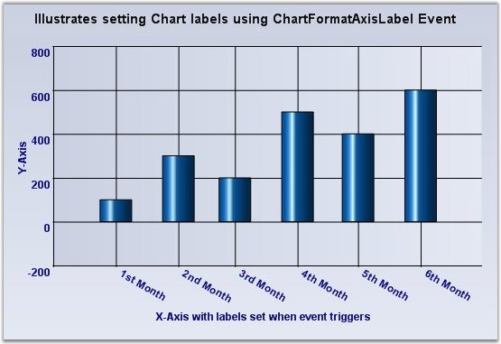
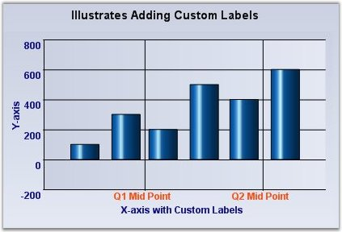
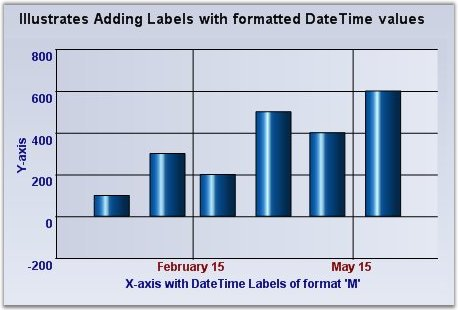

The formatting options specified above will usually satisfy the label text requirements. However, there are many other scenarios where this might not be sufficient. The following table lists a way to customize the text rendered in the label:
Customizing the label text for the intervals, which is generated automatically.
|
ChartAxis Event |
Description |
|
ChartFormatAxisLabel |
The event that gets raised for each label before getting rendered. This is a good place to customize the label text. |
The following ChartFormatAxisLabelEventArgs properties provide information specific to this event:
|
ChartFormatAxisLabelEventArgs |
Description |
|
AxisOrientation |
Returns the orientation of the axis for which the label is being generated. |
|
Handled |
Indicates whether this event was handled and no further processing is required from the chart. |
|
IsAxisPrimary |
Indicates whether the axis for which the label is being generated is a primary axis. |
|
Label |
Gets or sets the label that is to be rendered. |
|
Value |
Returns the value associated with the position of the label. |
|
ValueAsDate |
Returns the value associated with the position of the label as DateTime. |
|
[C#] Refer the below code snippets for using the ChartformatAxislabel event. private void chartControl1_ChartFormatAxisLabel(object sender, ChartFormatAxisLabelEventArgs e) { if (e.AxisOrientation == ChartOrientation.Horizontal) { if (e.ValueAsDate.Month == 1) e.Label = "1st Month"; else if (e.ValueAsDate.Month == 2) e.Label = "2nd Month"; else if (e.ValueAsDate.Month == 3) e.Label = "3rd Month"; else if (e.ValueAsDate.Month == 4) e.Label = "4th Month"; else if (e.ValueAsDate.Month == 5) e.Label = "5th Month"; else if (e.ValueAsDate.Month == 6) e.Label = "6th Month"; e.Handled = true; } } |

Figure 272: Customized chart labels
Using Custom Text
Specify a set of custom labels thereby also dictating the intervals.
|
ChartAxis Property |
Description |
|
TickLabelsDrawingMode |
AutomaticMode - Labels will be determined by the engine. UserMode - Labels from the Labels collection will be used. BothUserAndAutomaticMode - Both labels from the Automatic mode and User mode will be rendered. None - Labels will not be rendered. |
|
Labels |
A custom collection that allows you to fully customize the labels that get generated. The TickLabelsDrawingMode should be set to UserMode or BothUserAndAutomaticMode. |

Figure 273: Chart with 'Q1 Mid Point' and 'Q2 Mid Point' custom labels
Using Formatted Text
The diagram displayed below shows the custom date formatting.

Figure 274: DateTime formatted labels at the specified intervals